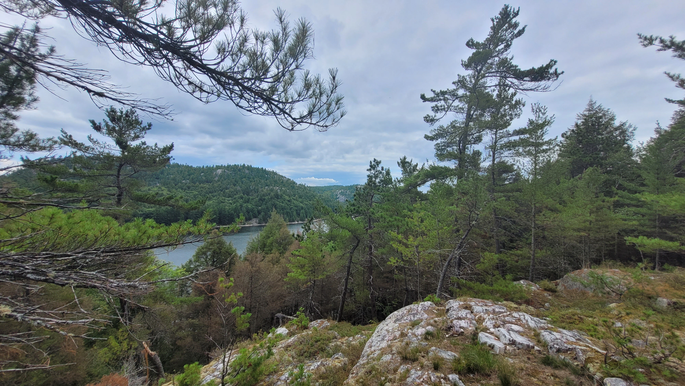
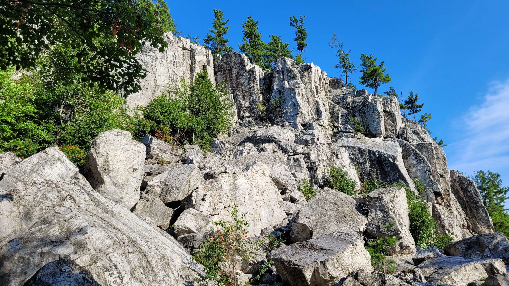
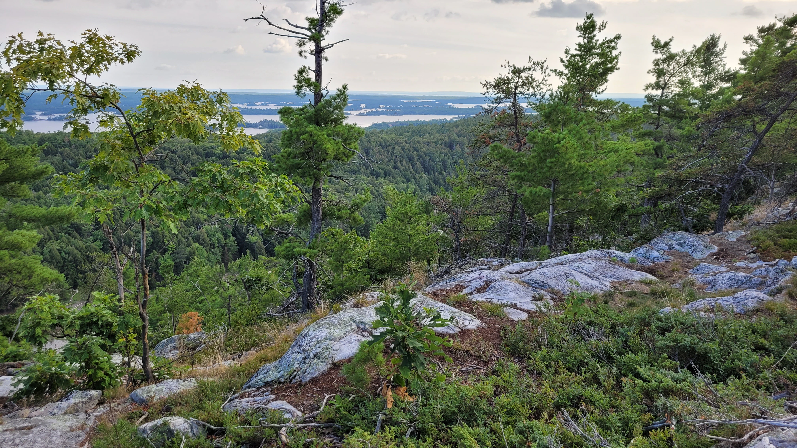

The Benjamin Islands expedition was over, but I wasn't quite ready to leave Northern Ontario.
I needed somewhere to stay for a few more nights while extending my summer vacation, and rather than heading straight home, I decided to find a frontcountry campsite and do a little more exploring.
Leading up to that summer, I had been watching videos from another paddler on YouTube, Nombski, whose adventures had introduced me to a few places I hadn't previously considered visiting. One of his trips had started from somewhere called Hilly Acres.
I knew almost nothing about the area, but I located it on a map, found a campsite, and decided to spend the night there.
At the time, it was simply a convenient place to pitch my tent.
I had no idea I would be coming back.
Fortunately, I had another reason to visit the area.
The previous year, while paddling near the Fox Islands, I had met another kayaker who recommended exploring the Heaven's Gate Nature Reserve. She described it as a beautiful hiking destination, somewhat reminiscent of Killarney, but considerably less visited. There were also opportunities for camping along the trails, making it possible to divide a longer hike into multiple days.
Even better, Hilly Acres was only minutes away.
It seemed like the perfect opportunity to explore somewhere new without having to paddle there first.
The hike itself was incredible. I spent the day exploring the trails, enjoying the quiet surroundings and taking in another side of Northern Ontario that I hadn't experienced before.

But the most memorable discovery happened almost by accident.
Toward the end of my loop, I somehow managed to take a wrong turn. Rather than immediately realizing my mistake, I continued along the unfamiliar trail. Only a few hundred metres beyond the fork, the landscape opened up and revealed something extraordinary.
One of the most spectacular cliffs I had ever seen.
A towering white quartzite formation rose dramatically above the surrounding landscape, crowned with windswept white pines clinging to the rock. The brilliant white stone contrasted against the dark vegetation, creating a scene that looked almost too perfectly arranged to be real.

I hadn't planned to find it. I hadn't even known it was there.
Sometimes the most memorable destinations are the ones you weren't looking for.
That accidental detour stayed with me long after the hike was over. It was one of those places that immediately makes you want to return, explore further, and understand what else might be hiding beyond the trail.
I would eventually come back to explore that little detour properly.
Another highlight of the hike was reaching Arabella Lookout.
From the top, I was rewarded with a spectacular view of the North Channel. The water stretched westward, interrupted by countless islands and narrow channels weaving between them.
I had never heard of the Bay of Islands at that point.
But I was looking directly at it.
From above, the landscape looked like an enormous maze of islands and waterways. Some appeared relatively close together, while others disappeared into the distance, inviting exploration in practically every direction.

It was exactly the kind of landscape I had become obsessed with exploring by kayak. A place where every channel seemed to lead somewhere new, where sheltered passages could suddenly open into expansive water, and where there were more potential destinations than anyone could reasonably explore in a single afternoon.
I knew what I wanted to do next.
The following day would be spent on the water.
I wanted to get closer to those islands, follow the channels, discover the hidden shorelines, and see what this unfamiliar corner of the North Channel had to offer.
Looking back, there is one detail that makes that discovery even more amusing.
I had spent the previous evening setting up my tent at Hilly Acres, simply looking for somewhere convenient to stay after my Benjamin Islands expedition.
I hadn't realized that my campsite was only metres away from a launch leading directly into the very landscape I was now staring at.
I had come looking for somewhere to sleep.
Instead, I had accidentally found my next adventure.